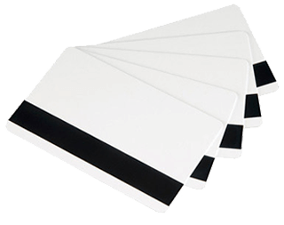
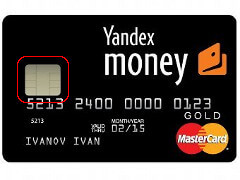

Основные преимущества чипа перед магнитной полосой
Рассмотрим основные преимущества пластика с чипом перед магнитной картой, благодаря которым первые активно наводняют рынок, а также поговорим о присущих и тем и другим недостатках.
 1. Чип значительно безопасней магнитной полосы. Фактически это полноценный микрокомпьютер со встроенной памятью для хранения данных. Данные защищены крипто-стойкими алгоритмами, а информацию с чипа невозможно скопировать при непосредственном подключении к нему, также практически невозможно сделать его дубликат (понятно, что подделать можно всё, но какими средствами?).
2. Транзакция (обмен информацией с банком-эквайером) по чиповой карте каждый раз подтверждается новым, специально для неё сформированным, кодом. Поэтому перехват транзакции бесполезен. Напротив, магнитная карточка передаёт всегда одни и те же данные, идентифицирующие карту, перехват которых позволит мошеннику восстановить информацию по пластику и создать его дубликат.
 3. Пластик с чипом долговечнее магнитной карточки (6-8 лет против 2-3). Если вы часто пользуетесь картой, то наверняка обратили внимание на её состояние через 1-2 года: начинает отслаиваться плёнка с нанесённой на неё магнитной полоской (из-за частых оплат в POS-терминалах торговых точек) и стираться буквы и цифры (особенно эмбоссированные). Кроме этого информация на полосе может быть искажена из-за контакта с сильными магнитными полями.
4. Возможен обмен данными с банком в отложенном режиме (офлайн-транзакции). В отличие от магнитных карт, по которым обязательна авторизация в режиме онлайн, чиповые содержат информацию о состоянии счёта, что позволяет не спрашивать у банка «разрешение» на операцию в реальном времени. Все операции по чиповым картам могут копиться в течение дня и передаваться в банк-эквайер (или в процессинговый центр) за один раз (в отложенном режиме).
5. Возможен выпуск чиповых карт с различными дополнительными приложениями, как финансовыми, так и нефинансовыми. Спектр таких приложений очень широк и с ними карточка может быть: транспортной (проезд в метро, автобусе, троллейбусе), топливной, идентификационной, с удостоверением личности (паспорт), социальной, бонусной, с медицинской страховкой и так далее. Многие приложения могут сожительствовать на одном пластике, например, кредитная карта транспортная.
Есть ли недостатки у карт с чипом?
Из недостатков можно выделить медлительность («общение» микропроцессора с аппаратурой банкомата или POS-терминала), хотя при развитии современных технологий задержка будет всё меньше.
Необходимо при оплате вводить ПИН-код, но, скорее, это дополнительная защита.
Чипы значительно дороже своих магнитных сородичей, но при крупных партиях этот недостаток сводится на нет, а потребителя он и вовсе не касается – для него дороже карта не станет. Будем считать, что банки платят за безопасность своих средств (и клиента).
Несомненно, будущее за чиповыми картами, а пластик с магнитной полосой скоро станет такой же редкостью, как часы с кукушкой.